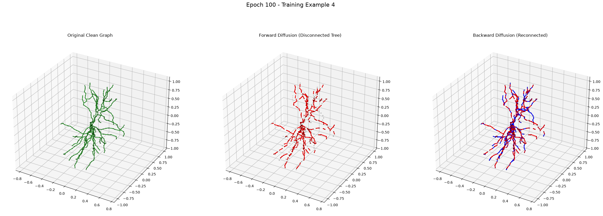

marp: true theme: default paginate: true
Topological Edge Prediction
The Backward Diffusion Model is tasked with reversing the discrete corruption. Given a set of disconnected sub-trees and a set of candidate edges between them, it predicts the binary probability $p_{uv}$ that an edge should exist between nodes $u$ and $v$.
The model is a hybrid combination of an EGNN (for local geometric features) and a Graph Transformer (for global context).
graph TD
X[Node Coordinates N, 3] --> NodeMLP[Node MLP]
Edges[Noisy Edges 2, E] --> EGNN[EGNN Layers]
NodeMLP --> EGNN
EGNN --> Pad[Pad Batches]
Pad --> Trans[Transformer Encoder]
Trans --> Unpad[Flatten]
Unpad --> Ext[Extract Src/Dst]
Ext --> Head[Edge Head]
Head --> Output[Edge Logits]
To predict an edge between source $u$ and destination $v$, the model concatenates: - Source node invariant feature $h_u$ - Destination node invariant feature $h_v$ - Scale-Invariant Log Distance: $\text{log_dist} = \log(1 + \frac{||x_u - x_v||^2}{\text{Var}(X)})$
Dividing the absolute gap distance by the spatial variance of the given graph ensures the model performs flawlessly on 5-micron scale graphs and 500-micron scale graphs alike.
The model is optimized using Binary Cross-Entropy with Logits (nn.BCEWithLogitsLoss).
Intra-batch Negative Sampling:
During the DDP training loop, the trainer automatically generates topologically invalid (negative) candidate edges. The model must learn to classify true ground-truth edges (Label 1) versus these aggressively sampled negative edges (Label 0).

Critical Note: Laplacian Positional Encodings (lap_pe) were strictly excluded from this architecture.
Providing eigenvectors allows Graph Transformers to "cheat" and memorize topologies directly from the spectral decomposition. By relying purely on EGNN message passing, the model is forced to learn actual 3D structural branching rules.